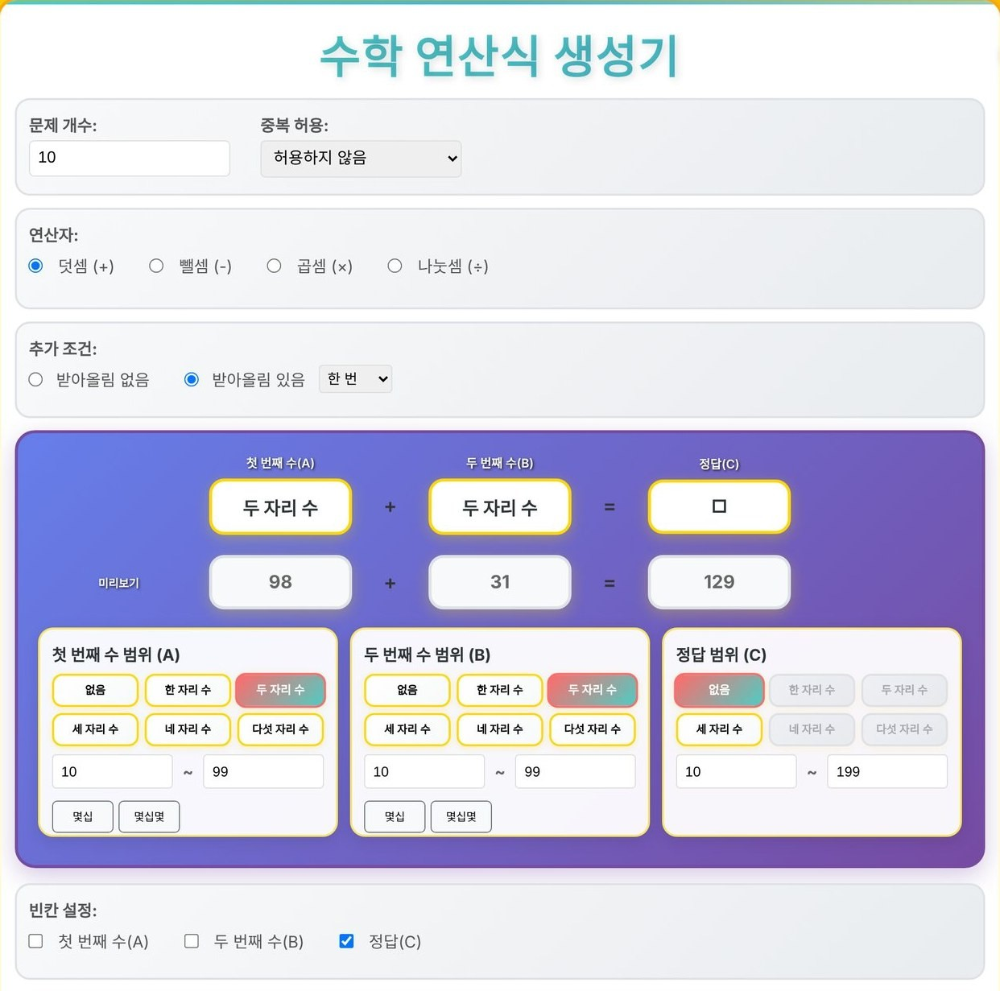
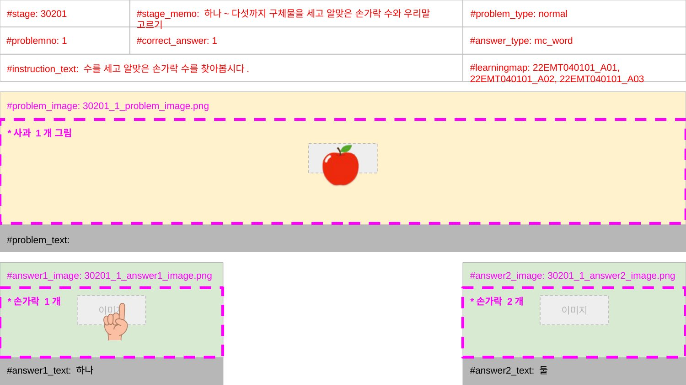
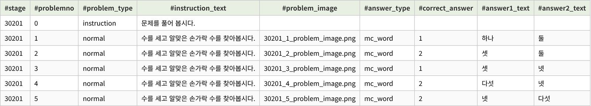
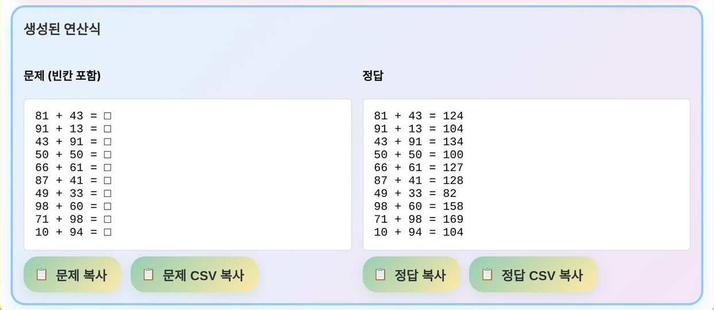

AI로 만든 업무 도구
문항을 만들 때는 원고를 쓰는 것으로 끝나지 않습니다. 원고에 적은 문제 유형, 난이도, 표준분류체계 같은 정보를 서비스에 올릴 데이터 양식에 다시 옮겨 넣어야 합니다. AI가 업무에 널리 쓰이기 전까지는 이 일을 사람이 하나씩 했고, 저도 그렇게 해 왔습니다.
에누마코리아에서 특수교육 AI 디지털교과서의 수학 콘텐츠를 만들면서, 처음으로 이런 일을 처리할 도구를 AI의 도움을 받아 직접 만들었습니다. Apps Script를 써 본 것도, 코드로 도구를 만든 것도 이때가 처음입니다.

- 구분
- 회사 · 에누마코리아 · 특수교육 AI 디지털교과서
- 역할
- 원고 템플릿 설계, 원고를 데이터 시트로 옮기는 Apps Script 작성, 연산 문항 생성기와 이미지 파일명 도구 제작. 코드는 AI의 도움을 받아 작성
- 기간
- 2025.07~10
- 도구
- ChatGPT · Google Apps Script · Claude Code
- 결과
- 문항 380개를 데이터 시트에 한 번에 입력 · 연산 문항 생성기 · 이미지 파일명 도구
원고에서 데이터 시트까지
동물 퀴즈와 평가 문항 380개를 만들 때는, 처음부터 데이터 시트에 자동으로 넣을 생각으로 원고 템플릿을 데이터 시트와 같은 칸으로 짰습니다. 팀에서는 이 템플릿과 교과서·성취기준·표준분류체계 자료를 ChatGPT에 주고 단원별 초안을 받은 뒤, 서로 검수해 원고를 완성했습니다. 완성된 원고는 제가 짠 Apps Script가 이름이 같은 칸끼리 짝을 지어 데이터 시트로 옮겼습니다.


연산 문항 생성기
연산 스테이지에는 받아올림 횟수나 수의 범위만 조금씩 다른 문제가 많이 필요했습니다. 생성기에서 사칙연산과 수의 범위, 받아올림·받아내림 횟수(1~5회), 빈칸 자리(첫 번째 수·두 번째 수·정답)를 고르면 그 조건에 맞는 문항과 정답이 원하는 개수만큼 나오고, CSV로 바로 복사됩니다. 조건을 조금씩 바꿔 가며 단계별 스테이지를 채웠습니다.

이미지 파일명 도구
특수교육원에서 받은 교과서 삽화는 디자이너가 크기를 맞춘 뒤, 파일명을 규칙에 맞게 모두 바꿔야 쓸 수 있었습니다. 그래서 엑셀에 지금 파일명과 바꿀 파일명을 적어 이미지와 함께 넣으면 한꺼번에 바뀌게 했습니다. 같은 삽화를 크기만 달리해 여러 액티비티에 쓰는 일도 많아서, 같은 그림끼리 찾아 짝지은 뒤 이름을 바꾸는 기능도 넣었습니다. 짝을 찾는 방식은 파일명, 그림 유사도, 순서 세 가지를 두어 이름 규칙이 무너진 자료도 대조할 수 있게 했습니다. 처음에는 서버가 있어야 돌아갔는데, 파일 하나만 복사하면 누구나 쓸 수 있도록 고쳤습니다.